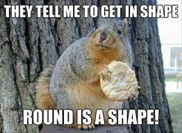
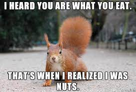

"To truly Antelope with the Squirrel, one must first understand their thermoregulation techniques." - Author Known but Undisclosed Even Though She's Pretty Obvious
When the antelope squirrel's body temperature reaches its upper limits, it will get into a cool, shady spot and lay down spread-eagle with their belly pressed against the cool ground. This releases the heat from its body to help cool the animal down. (Source)
When the surrounding temperature exceeds about 40℃, the antelope squirrel may erect its tails and turn its backs to the sun, reducing heat input considerably. (Solar radiation from the sun is obstructed by the tail, which provides shade. Radiation absorbed by the tail is not absorbed by rest of the body so less surface-area to mass of squirrel is exposed to radiation).
This behavioral use of the tail as a heat shield more than doubles the time available to squirrels for continuous surface foraging, adding 4h to the 3h sustainable with tail-down behavior alone. (Source)
Maybe if I actually finish my homework first, I'll come back to make some antelope squirrel quiz. In the meantime, try these embedded things I found online (that are not actually about the antelope squirrel but is about squirrels and thermoregulation)!
ew I should never do this again. before i leave i know y'all like memes so na:
 I think these are Mr Tan worthy
lastly, here's a picture of my potential spirit animal (?), the fennec fox, which was spelt wrongly as "fernex fox" (what even?) in the SLS